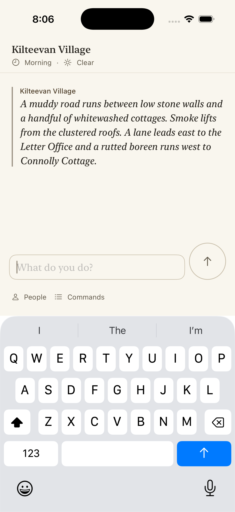

PR #2214: creating a new game survives being killed
Fixes issue #2210. Simulator recording (iPhone 17 Pro, iOS 26.5), production launch route with the embedded engine. Not physical-iPhone validation.
- The save holds a main branch and no snapshot, which is what the old build left when killed mid-creation. The app opens a new game on the opening scene and keeps the unfinished file as
phase2.unfinished-<seconds>.sqlite. Before this change, every launch failed with "try again".
- The transcript is emptied, as when the app is killed before the opening scene was journaled. On relaunch the opening scene is journaled again. Before, the transcript stayed empty.
Final states
